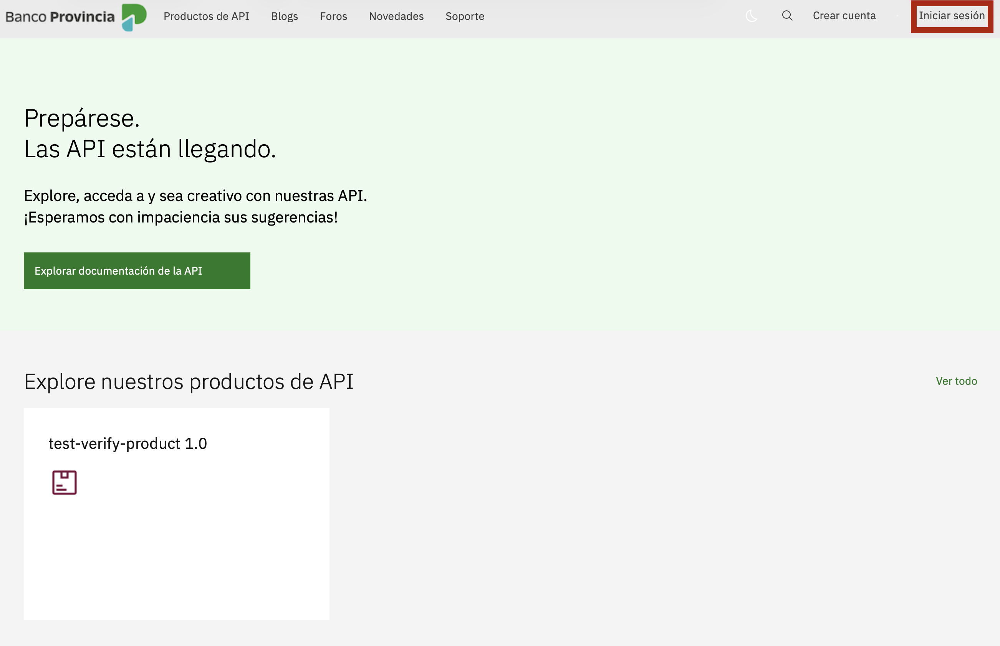
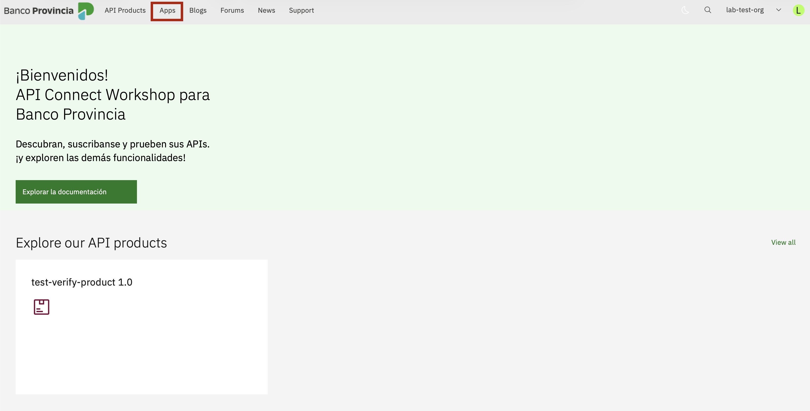
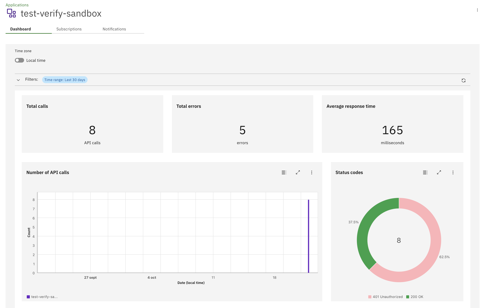
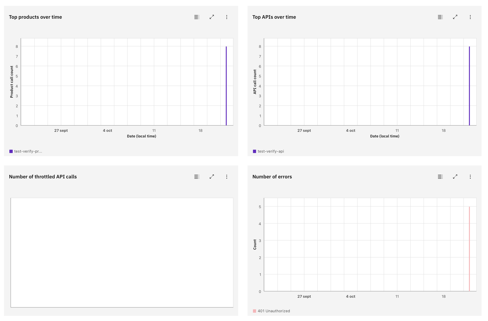
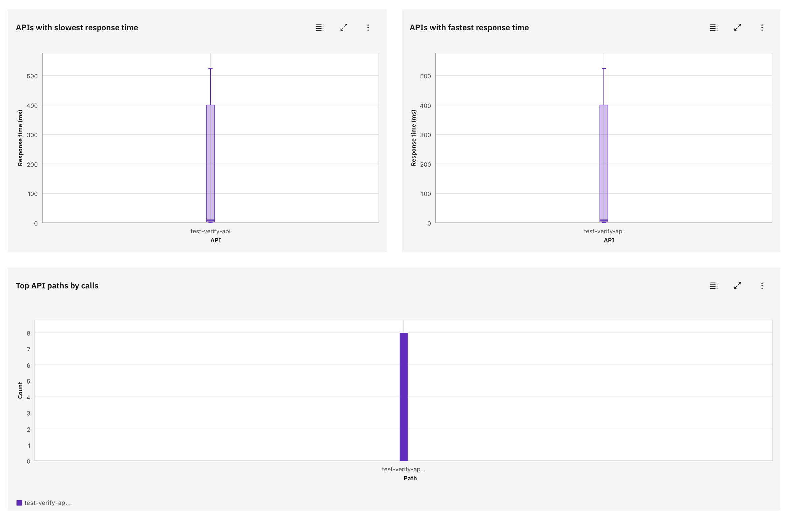
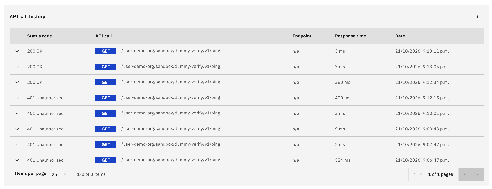
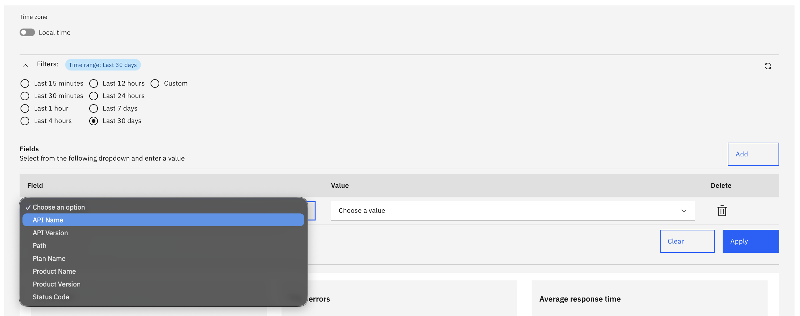
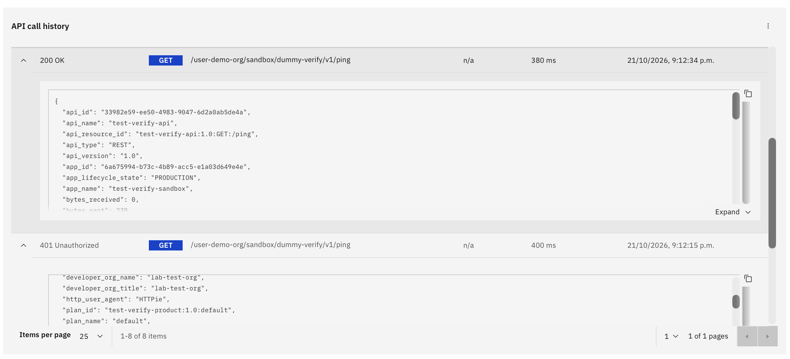
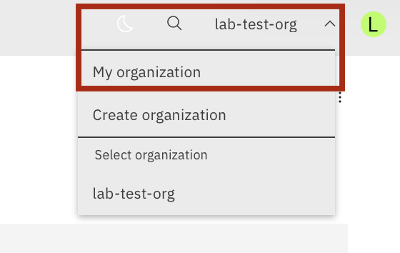
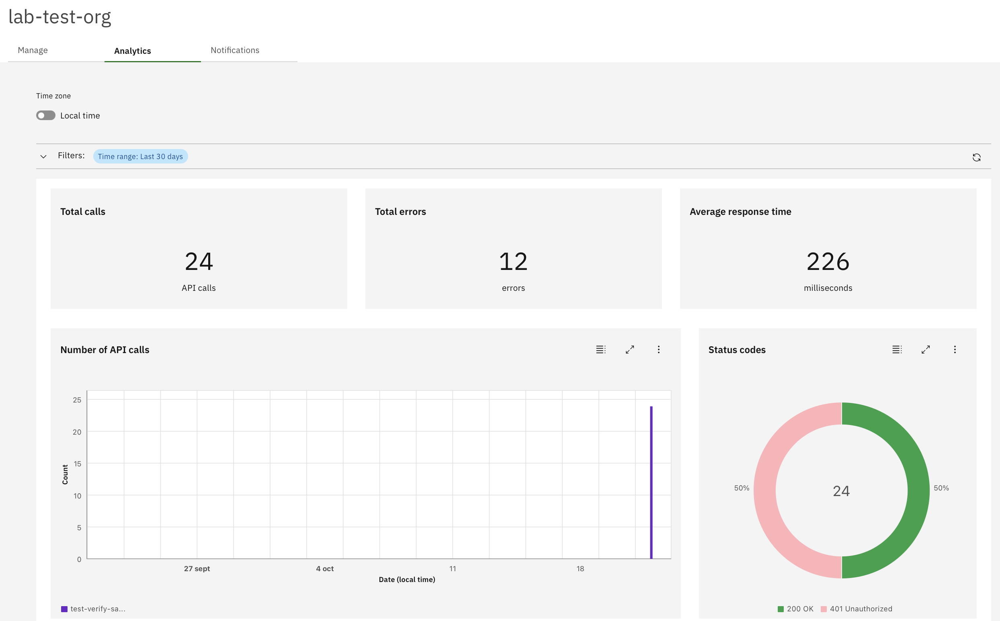

Para evitar colisiones de nombres con los demás participantes en el ambiente APIC compartido, este lab utiliza tu identificador personalizado ceci01 (4 letras de tu nombre + 2 dígitos de ambiente). Podés cambiarlo en cualquier momento desde el botón en la barra superior.
Contenido
Pasos del laboratorio
Paso 1: Acceder al portal
Abrí una nueva pestaña en tu navegador y navegá a la URL del Developer Portal de tu ambiente:
Hacé click en el botón Iniciar sesión (arriba a la derecha) e ingresá con las credenciales de tu cuenta de desarrollador / consumidor creada en el laboratorio anterior.

El Developer Portal es tu punto central de autogestión: además de permitirte descubrir APIs y suscribirte a productos, te ofrece visibilidad en tiempo real sobre el tráfico, los tiempos de respuesta y la cuota de uso de tus aplicaciones sin depender de los equipos de infraestructura.
Paso 2: Navegar a Apps
En la barra superior de navegación del Developer Portal, hacé click en la opción Apps.

Paso 3: Seleccionar tu aplicación
En el listado de aplicaciones, hacé click sobre el nombre de tu aplicación (app-ceci01) para abrir su panel de administración.
Cada aplicación cuenta con su propia vista de analítica aislada. Esto permite a los desarrolladores evaluar de forma granular el rendimiento y volumen de consumo de un componente o proyecto específico, sin mezclar sus métricas con las de otras aplicaciones de la organización.
Paso 4: Dashboard de consumo por aplicación
En esta pantalla podrás analizar el comportamiento operativo y el consumo histórico de tu aplicación. El panel consolida métricas clave (volumen total de llamadas, tasa de errores, latencia media) y reportes visuales prediseñados:

Cantidad de llamados en un período de tiempo
Muestra la evolución del volumen total de invocaciones recibidas por la aplicación a lo largo del tiempo.
Status codes
Distribución de las respuestas según el código HTTP (éxitos 200 vs errores 4xx/5xx).
Top products over time
Muestra los Productos de APIs más consumidos por la aplicación en el período analizado.
Top APIs over time
Evolución temporal de las APIs que registraron el mayor volumen de tráfico.
Number of throttled API calls
Cantidad de llamadas bloqueadas por superar el límite de velocidad (Rate Limit) del plan contratado.
Number of errors
Seguimiento de llamadas fallidas para identificar anomalías operativas.

APIs with slowest response time
Identifica las operaciones con mayor latencia promedio para detectar cuellos de botella.
APIs with fastest response time
Lista las APIs con menor tiempo de respuesta y mejor rendimiento global.
Top API paths by calls
Desglose de los paths o rutas específicas con mayor cantidad de invocaciones.

API call history
Registro tabular detallado de cada llamada individual a las APIs, incluyendo timestamp, código de estado HTTP, API, endpoint y latencia.

Podés ajustar el rango temporal (últimas 24 horas, 7 días, 30 días o períodos personalizados) y aplicar filtros por código de estado o API para investigar incidentes puntuales o analizar tendencias de demanda.

Paso 5: Auditar eventos de API
Desde la tabla de API call history, podés hacer click y expandir cualquier registro individual para inspeccionar el detalle técnico completo de esa transacción.
Al expandir un evento obtenés trazabilidad total de la petición: podés revisar los headers enviados, la respuesta del backend, el código de estado exacto y los tiempos de latencia. Esto permite a los desarrolladores diagnosticar fallas en sus integraciones de forma inmediata sin necesidad de abrir un ticket de soporte.

Paso 6: Analítica por organización consumidora
Si contás con rol de administrador en tu organización consumidora, disponés además de un panel de analítica consolidado que agrega el consumo conjunto de todas las aplicaciones asociadas a la organización.
Para acceder, hacé click en la esquina superior derecha sobre el nombre de tu organización consumidora y seleccioná My Organization:

Dentro de la sección, ingresá a la pestaña Analytics. Allí encontrarás los mismos KPIs, desgloses y reportes de volumen y errores, pero totalizando la actividad global de la organización:

Esta perspectiva global permite a los líderes técnicos y administradores de proyectos controlar el consumo acumulado frente a las cuotas contratadas, planificar necesidades de escalabilidad y auditar qué aplicaciones concentran el mayor tráfico de la empresa.
Verificación
Al finalizar este laboratorio deberías poder:
- Acceder al Developer Portal e iniciar sesión con tu cuenta de consumidor.
- Navegar a la sección Apps y seleccionar tu aplicación consumidora.
- Interpretar los KPIs y gráficos del Dashboard de consumo por aplicación: volumen de llamados, códigos de estado, top productos, top APIs, llamadas limitadas (throttled) y errores.
- Analizar los reportes de tiempos de respuesta (APIs más lentas y más rápidas) y rutas más invocadas.
- Aplicar filtros para acotar el rango de tiempo o condiciones específicas de búsqueda.
- Expandir registros en el API call history para auditar eventos individuales de llamada.
- Acceder al dashboard consolidado de analítica de la Organización Consumidora desde My Organization → Analytics.